| Component | Weight | Key Dates |
|---|---|---|
| Quizzes (3) | 30% | July 10, 17, 24 |
| Final Exam | 25% | July 31 |
| Participation & Engagement | 20% | Ongoing — every class |
| In-Class Writing Prompts | 15% | Mon/Tue/Thu — every class |
| Article Presentation & Discussion | 10% | One per student — sign up today |
International Political Economy
INTL 503 | Chapter 1
Professor Sarah Bauerle Danzman
July 6, 2026
Course Logistics
Welcome to INTL 503!
International Political Economy
- Intensive 4-week format
- Daily meetings M/Tu/Th/F
- Lecture, discussion, and application
- Foundations through contemporary challenges
Summer 2026
Two readings per session (chapter + article) | ~2 hours per class
Your Instructor
Professor Sarah Bauerle Danzman
Research interests:
- Multinational Firms as Political Actors
- The Politics & Welfare Effects of Investment Regulation
- National Security and Economic Policy (especially investment screening)
- Innovation Systems
- Political Business Connections
Office Hours: Wednesdays on Teams — book via Microsoft Bookings
Best way to reach me: Canvas messages or sbauerle@iu.edu
Course Materials
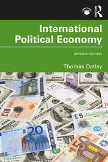
Required Text:
Oatley, Thomas. International Political Economy. 7th edition. Routledge, 2023.
Available through the IU Library (e-book), campus bookstore, or online retailers.
Scholarly Articles (Reading 2):
One peer-reviewed article paired with the chapter on most class days. All articles posted to Canvas as PDFs or linked through the IU Library.
Assignments Overview
What a Typical Class Looks Like
| Segment | Time | Purpose |
|---|---|---|
| Lecture | ~75 min | The day's chapter — frameworks, applications, debates |
| Article presentation & discussion | ~20 min | Student-led discussion of the day's article (most days) |
| Writing & discussion/debrief — or quiz | ~30 min | Mon/Tue/Thu: in-class writing plus debrief. Fridays of weeks 1–3: quiz covering that week's material |
About 125 minutes total, inside our 130-minute block. The last segment flips depending on the day — writing plus debrief on Monday/Tuesday/Thursday, a quiz on Fridays of weeks 1–3. Presentations happen most but not all days.
How to Read IPE Scholarship (the Articles)
Undergraduate reading is to inform. Graduate reading is to assess Reading and note taking for articles is synthetic.
A practical order:
- Abstract — what’s the claim?
- Conclusion — what does the author say they showed?
- Introduction — why does it matter? what gap?
- Lit review — what is the ‘argument space’?
- Findings — what’s the evidence?
- Methodology — how do they find their evidence?
What to write down
For every article, jot a one-page note:
- The puzzle or research question
- The main claim/proposition
- The argument space
- The kind of evidence the author uses & what they find
- The implication of the findings
- Most important/useful ways the article changed your mind
- Most important things you found unconvincing or confusing
- How the article relates to concepts being discussed in class
You will use these for quizzes, the final, and your presentation. Don’t try to memorize. Synthesize.
Article Presentation: Sign Up Today
Each student presents one scholarly article (Reading 2) over the term.
Your 15–20 minute slot:
- Summarize the article — argument, evidence, conclusion (~5 min)
- Connect it to the day’s Oatley chapter
- Pose 2–3 discussion questions
- Facilitate the resulting conversation
Worth 10% of your final grade.
Action items today
- Sign up on the Canvas sheet by end of class
- Wednesday is a reading day — use it to start reading your article early
- I’ll model the first presentation tomorrow (Day 2) with the WTO article so you have a clear example
Expectations
From you:
- Complete readings before class
- Engage actively and respectfully
- Submit work on time
- Communicate about challenges
From me:
- Clear explanations and organization
- Timely feedback
- Availability for support
- Flexibility when appropriate
Today’s Plan
Today’s Big Question
How does the global economy shape your life — and how do you shape it back?
| Section | What we'll cover |
|---|---|
| 1 · Defining IPE | Why politics and economics can't be studied separately |
| 2 · The Stakes | A $117 trillion global economy — vast, uneven, integrated |
| 3 · Model of Analysis | Who gains, who loses, and which institutions decide |
| 4 · Three Ways of Seeing | Smith, List, and Marx on the politics of trade |
| 5 · Rise, Fall, Rebuild, Rupture? | Four eras of globalization since 1815 |
| 6 · Writing & Discussion | Apply the framework to a recent policy debate |
Defining IPE
What is International Political Economy?
“IPE examines the interaction between politics and economics in the international system.”
Three core questions:
- How do political factors shape international economic outcomes?
- How do economic factors shape international political outcomes?
- How do these interactions affect global welfare and distribution?
The Interdependence of Politics and Economics
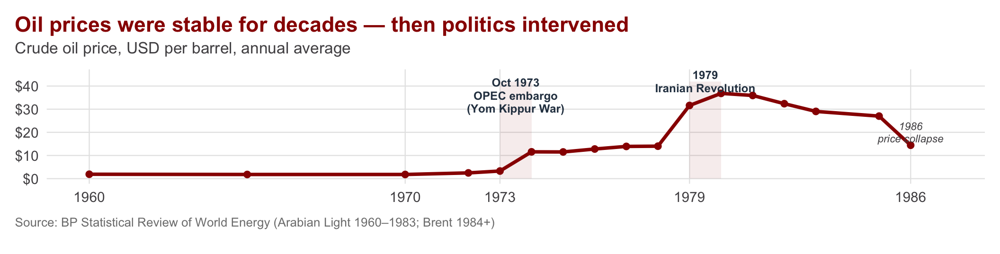
Economics alone
Supply and demand fundamentals barely changed in October 1973. Prices quadrupled anyway.
Politics alone
OPEC’s embargo was retaliation for U.S. support of Israel in the Yom Kippur War — but political acts don’t move global prices unless…
IPE
…market structure makes them possible. Politics + cartel power + Western dependence produced a shock neither lens explains on its own.
What Are the Stakes?
A $117 Trillion System
Scale:
- 80x larger than 1960
- Top 10 economies = 67% of total
Inequality:
- All of Africa (54 countries) ≈ Texas
- India (1.4B) ≈ UK (67M) in GDP — despite ~20x the population
Source: IMF World Economic Outlook (Oct 2025)
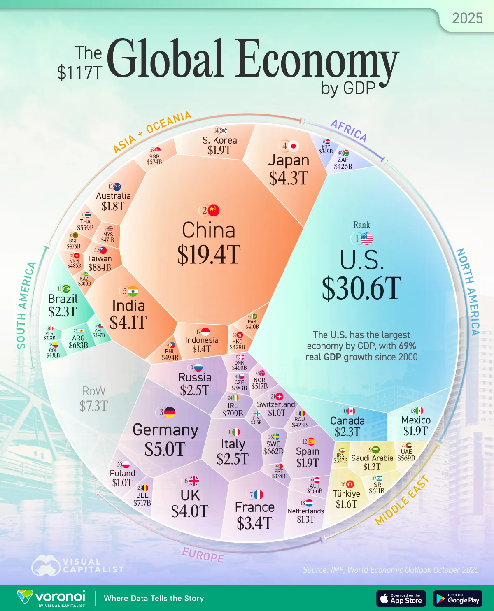
Trade: The Engine of Integration
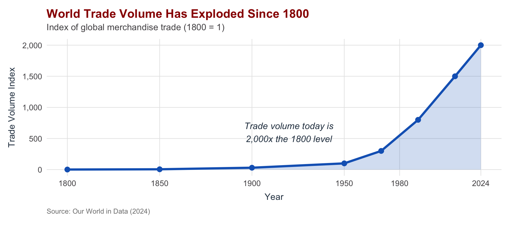
Trade as Share of the Economy
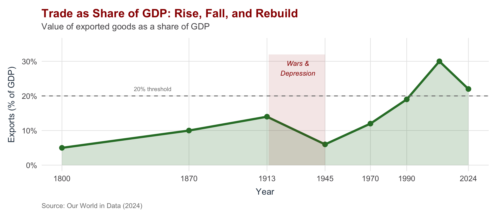
Who Trades With Whom?
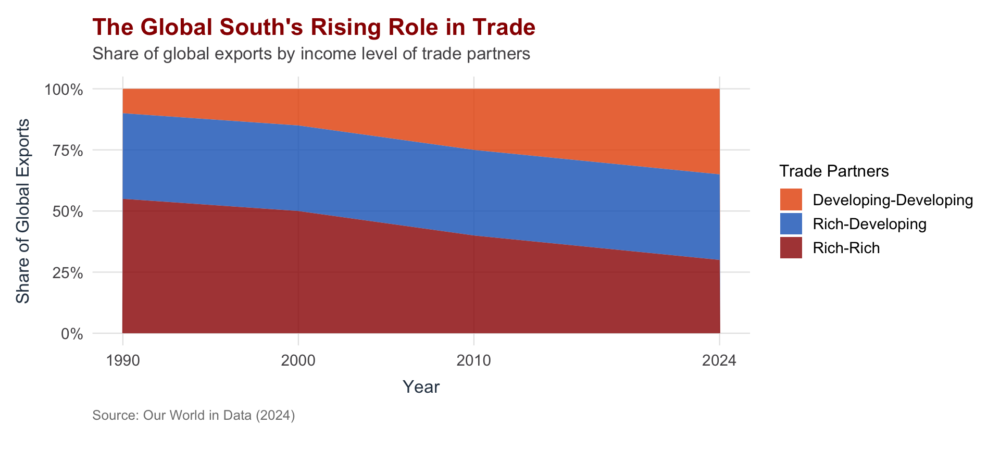
China: The New Center of Global Trade
Top import partner for ~2/3 of countries
- 2000: China $474B vs. US $2T
- 2024: China $6.2T vs. US $5.3T
- Crossover: 2012
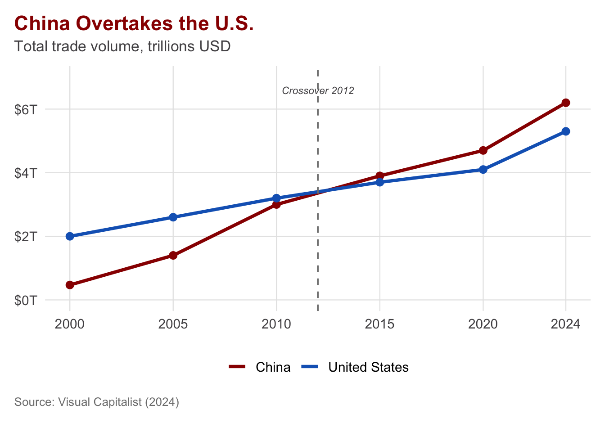
Intra-Industry Trade: The Supply Chain Era
Trade is no longer just “wine for cloth”
Countries increasingly trade:
- Intermediate goods (parts, components)
- Similar products (German cars for Japanese cars)
Why it matters:
- Your iPhone contains parts from 43+ countries
- A car crosses borders 8 times during production
- Disruptions anywhere affect everywhere
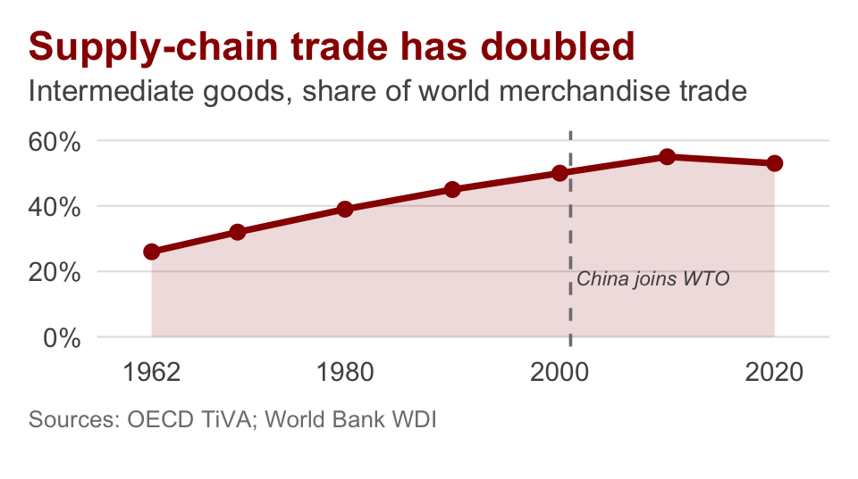
Model of Analysis
The OEP Framework
Open Economy Politics — the dominant analytical framework in contemporary US-based IPE — traces policy outcomes through interests → institutions (domestic and international) → policy, and the feedback that re-shapes interests over time.
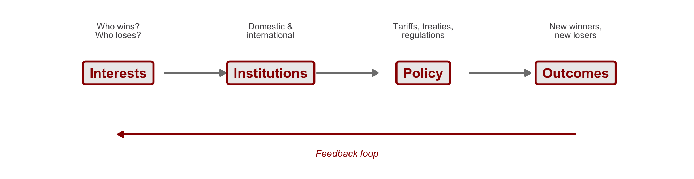
In this course
Oatley’s textbook is largely an OEP text — the society- and state-centered models you’ll see throughout the term are its core machinery. OEP isn’t the only approach (we’ll incorporate constructivist and historical alternatives throughout), but it dominates the contemporary U.S. school, and so we’ll build off its core tenets.
The Lumber Tariff: A Case Study
April 2017
Tariffs on Canadian softwood lumber: 0% → 20%
Who wanted this? U.S. Lumber Coalition
Who opposed it? Home builders and consumers
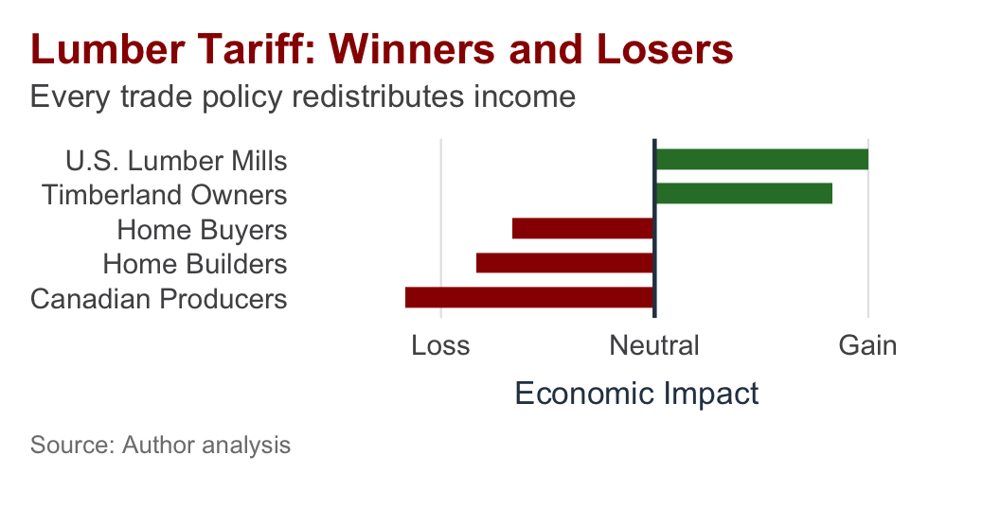
Why Did the Mills Win?
Concentrated benefits, diffuse costs
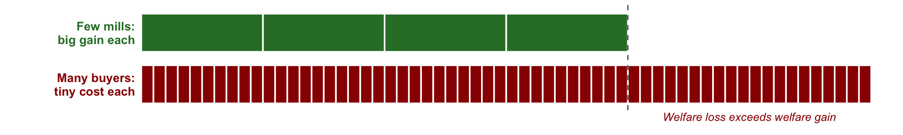
Organization matters
- Lumber Coalition: decades of lobbying
- Home buyers: no unified voice
- It pays mills to lobby; not worth $2 to any individual buyer
Institutions matter
- Executive authority over trade remedies
- No Congressional vote required
- WTO allows “injury” findings
Core Insight
Concentrated, organized interests often beat diffuse, unorganized majorities even if they impose aggregate welfare costs. This is a Collective Action Failure (Mancur Olson, 1965).
Four Issue Areas of IPE
| Issue Area | Key Question | Key Actors |
|---|---|---|
| International Trade | Who benefits from trade? Why protect some industries? | Exporters, import-competing firms, consumers |
| Monetary System | Who controls exchange rates? How do currencies interact? | Central banks, finance ministries, traders |
| Multinational Corporations | Why do firms go global? How do states regulate them? | MNCs, host & home governments |
| Economic Development | Why are some countries rich? What strategies work? | Developing states, IFIs, NGOs |
Three Ways of Seeing
The Founders of IPE Thought
IPE draws on three intellectual traditions, each asking a different question about the global economy.
Liberalism
How does trade serve individual welfare?
Economic Nationalism
How does trade serve national power?
Marxism
How does trade distribute wealth between classes?
Adam Smith (1723–1790): The Liberal Vision
The Wealth of Nations (1776)
- Division of labor increases productivity
- Free markets allocate resources efficiently
- Trade benefits all parties—not zero-sum
- The state should protect property, not direct production
Legacy: Foundation of classical economics; “invisible hand” as metaphor for market coordination.
Friedrich List (1789–1846): The Nationalist Response
The National System of Political Economy (1841)
- Free trade benefits the already powerful (Britain)
- Infant industries need temporary protection
- Manufacturing capability = national strength
- Individual gain ≠ national interest
Legacy: Influenced Germany, the U.S. (Hamilton), Japan, and modern industrial policy debates.
Karl Marx (1818–1883): The Class Critique
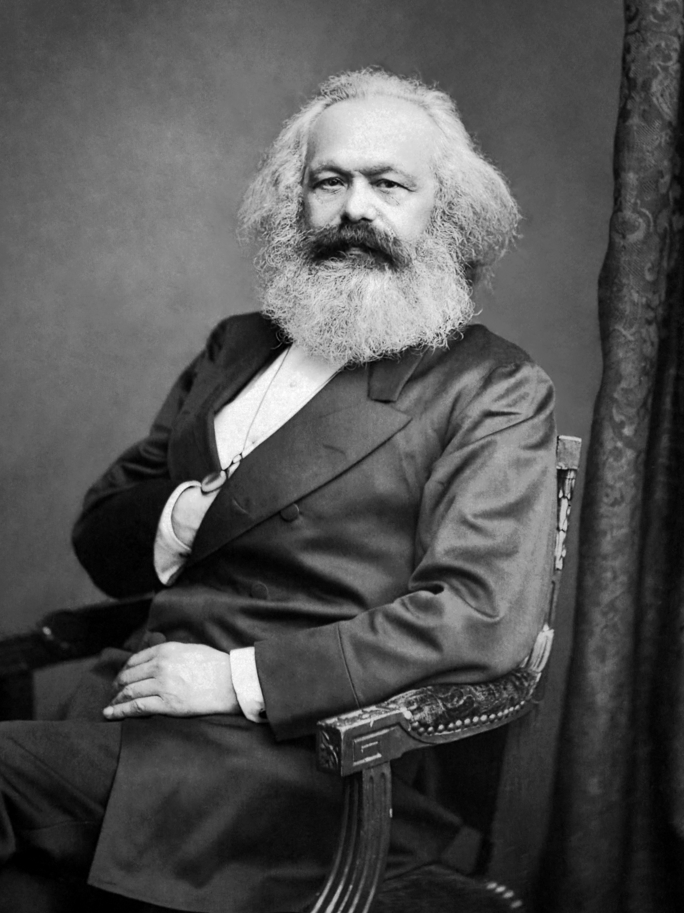
Das Kapital (1867)
- Capitalism exploits workers (surplus value)
- The state serves the capitalist class
- Economic crises are systemic, not accidental
- Class conflict—not harmony—drives history
Legacy: Shaped labor movements, socialist states, and critical analysis of inequality in the global economy.
Comparing the Three Schools
| Liberalism | Economic Nationalism | Marxism | |
|---|---|---|---|
| Key Actor | Individuals | The State | Classes |
| View of Trade | Mutual benefit | Tool of power | Exploitation |
| State's Role | Protect rights | Guide economy | Serves capital |
| System Image | Harmonious | Competitive | Conflictual |
How the Schools Align with Frameworks
Societal explanations
- Liberalism emphasizes individuals and interest groups
- Winners and losers organize politically
- Policy reflects aggregated preferences
State/class explanations
- Economic nationalism sees the state as autonomous actor
- Marxism sees class structure as determinative
What About Constructivism?
Constructivists ask: Where do interests come from?
- Ideas become “social facts”
- Shape how actors understand their interests
- Define what worlds seem possible
Example: “Free trade is good” became common sense—but wasn’t always.
We draw on all three schools but focus on how interests and institutions interact—without assuming markets always work, states always seek power, or class conflict explains everything.
Rise, Fall, Rebuild, Rupture?
Two Centuries of Globalization
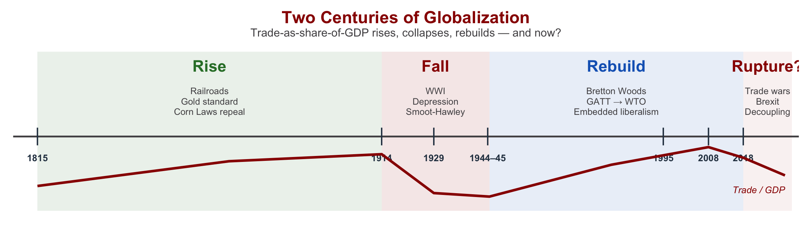
The First Globalization (1815–1914)
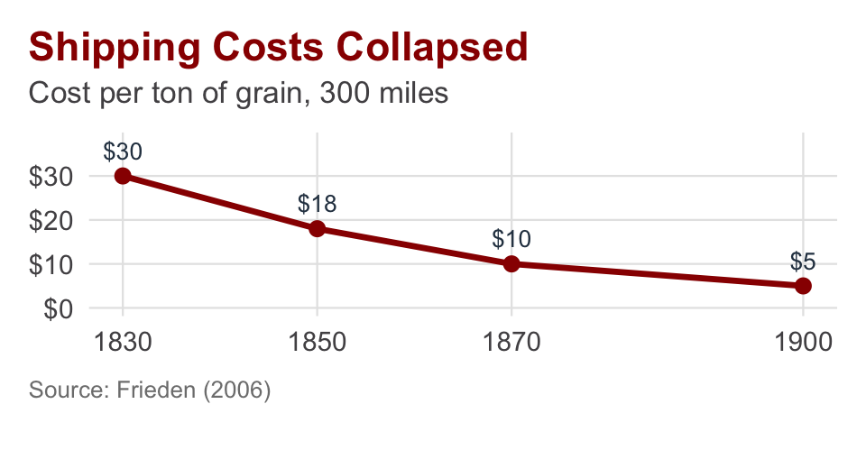
Technology made it possible:
- Railroads, steamships slashed costs
- Telegraph enabled coordination
Politics made it real:
- Britain repeals Corn Laws (1846)
- Gold standard stabilizes currencies
The Collapse (1914–1945)
WWI: Gold standard abandoned, trade controls imposed
Depression: U.S. output falls 30%, Smoot-Hawley, beggar-thy-neighbor
Result: World fragments into hostile blocs.
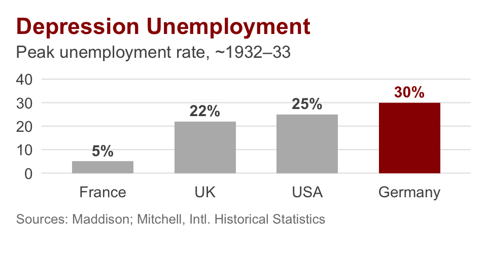
The Reconstruction: Bretton Woods (1944) and Beyond
Lessons learned: economic collapse fueled fascism and war; American leadership was essential. Bretton Woods created the IMF and IBRD (World Bank); the trade pillar — originally envisioned as the ITO at Havana — emerged separately as GATT (1947) after the ITO failed in the U.S. Senate. Together these three institutions form what we now call the postwar economic order.
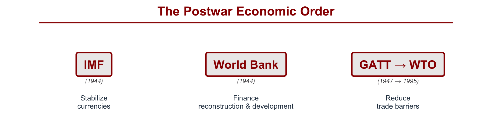
Embedded Liberalism
The postwar bargain: free trade between countries, policy autonomy within countries, safety nets permitted. This compromise held for 40 years.
The signing of the Bretton Woods Agreement, 1944
Today’s Challenges
Populism
1.5% → 15–25%
US avg. tariff rate, 2017 → 2026
figure remains in flux after Learning Resources v. Trump (Feb 2026)
- Trump tariffs (2018–)
- Brexit (2016)
- Industrial policy revival
Great Power Rivalry
22% → 13%
China’s share of US imports, 2018 → 2024
- Technology decoupling
- Supply chain “reshoring”
- Economic statecraft
Climate Crisis
$369 billion
IRA green-industrial subsidies, US (2022)
- Carbon border taxes
- Green subsidies race
- New governance gaps
A Precipice?
Mark Carney at World Economic Forum, Davos — January 2026
Key Takeaways
What to Remember
IPE = Politics + Economics — neither in isolation
Every policy creates winners and losers — they organize and fight (these are Distributional Consequences)
Interests + Institutions = our analytical framework (Open Economy Politics)
Three traditions, different lenses — Liberalism, Mercantilism, Marxism
Understand empirical trends — cycles of globalization, size of economy, trade, and its nature/composition.
We’re living through a potential rupture — how will IPE have to adjust?
Looking Ahead
Next Class (Tuesday, July 7): The WTO and the World Trade System
- What is the WTO and how does it work?
- Why do countries voluntarily limit their sovereignty?
- Are regional agreements friends or foes of global trade?
Preparation — two readings:
- Oatley, Chapter 2
- The scholarly article posted on Canvas (Reading 2)
I will model the article presentation tomorrow — come ready to see how it’s done before your own slot comes up.
Guiding question: If free trade benefits everyone, why is it so politically difficult?
Writing Activity
In-Class Writing (~10 minutes)
Prompt
Pick one recent economic policy debate in the news (a tariff, an investment screening, a subsidy, a sanction — anything).
In a few short paragraphs:
- Who wins and who loses from the policy?
- Which of the three schools — liberalism, nationalism, or Marxism — best explains the government’s rationale?
No AI. Submit in the Canvas assignment for today.
Share-Out (~15 minutes)
Pair (6 min)
- Share your case (3 min each)
- Identify one similarity, one difference
Class (9 min)
- What patterns emerged?
- Were certain schools more common?
- What surprised you?
Questions?
Contact
Office Hours: Wednesdays on Teams — book via Microsoft Bookings
Email: sbauerle@iu.edu
Canvas: Announcements, readings, assignments

INTL 503 | International Political Economy